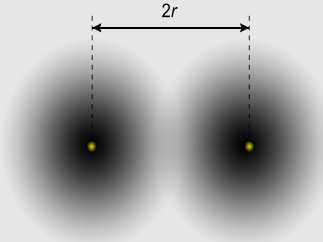
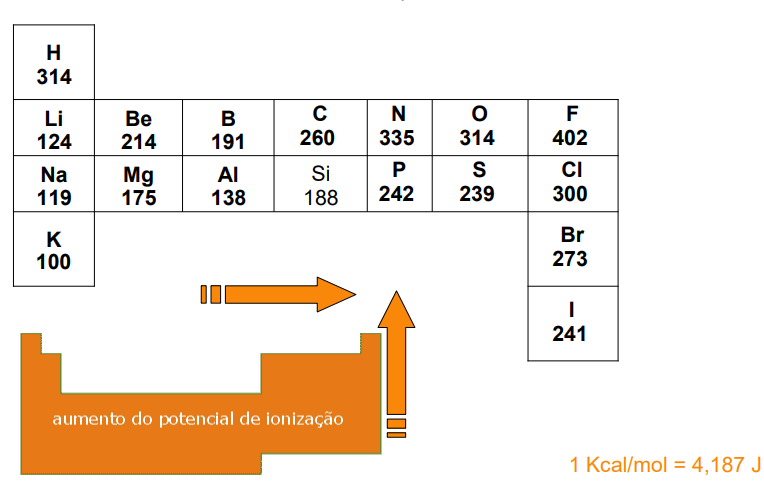
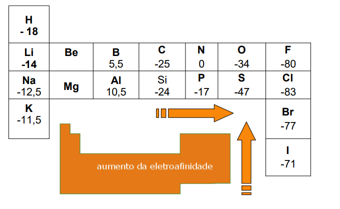
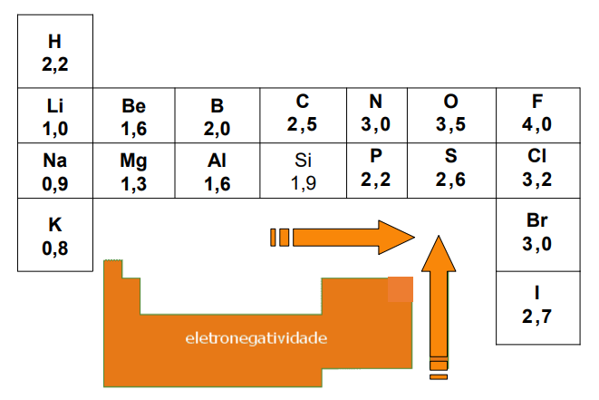
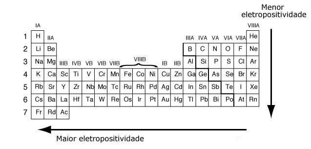

-
Propriedades Periódicas
- Propriedades Periódicas
- Raio atômico
O
raio atômico, assim como todas as propriedades periódicas, varia de acordo com a posição do elemento na tabela periódica, podendo diminuir genericamente ou aumentar ao longo de períodos em seu grupo.
O Raio atômico é a medida da distancia entre o centro de um átomo até a camada externa de outro átomo, onde geralmente calcula-se entre a distância do centro um átomo até o centro de outro átomo semelhante, concluindo que o raio é a metade dessa distância (2r). Importante lembrar que estamos considerando átomos de mesma proporção, em caso de não coesão nos tamanhos dos átomos, para determinar o raio de um, basta apenas ter o conhecimento do raio do outro.
O tamanho dos raios atômicos dos elementos varia de acordo com seus grupos, onde a medida em que descemos os grupos, o número de camadas eletrônicas aumentam, os elétrons de valência encontra-se na camada exterior do átomo e a carga nuclear efetiva é menos, tendo maior blindagem, conclui-se que é por isso que o raio atômico é maior.
Figura 1 – Distância internuclear

Fonte: Ferreira Fernandes (2013)
- Energia de Ionização
A
Potencial de ionização ou energia de ionização é a quantidade de energia necessária para retirar elétrons de um átomo. Para retirar os elétrons mais externos de um átomo, é necessária uma quantidade de energia suficiente para realizar isso, energia chamada de energia de ionização.
O potencial de ionização é medido pela unidade em elétron-volt (eV). Essa energia cresce em duas direções na tabela periódica: de baixo para cima, onde o raio atômico diminui e os elétrons ficando mais próximos do núcleo, aumentando a força de atração entre eles; da esquerda pra direita, onde a carga do núcleo aumenta e o raio atômico diminui.
Figura 2 – Potencial de ionização

Fonte: Hugo (2019)
- Afinidade eletrônica
A
afinidade eletrônica ou eletro-afinidade é a capacidade de um átomo que apesar de ter todos os seus elétrons, tem a capacidade de receber elétrons extras com facilidade. Em outras palavras, é a forma de como um átomo receber um ou mais elétrons extras, onde ao receber esses elétrons, se transformam-se em íons negativos(ânions) estáveis. Lembrando que isso acontece geralmente só com átomos isolados, adicionando ao estado gasoso.
O valor da afinidade eletrônica de um átomo é, em sua maioria, negativo. Quanto mais negativo sua afinidade, maior será a capacidade do átomo receber cada vez mais elétrons extras.
A variação da afinidade eletrônica tende a ser contraria a variação do raio atômico
Figura 3– Eletroafinidade

Fonte: Hugo (2019)
- Eletronegatividade
A
Eletronegatividade é a capacidade de um átomo atrair os elétrons de outro átomo, quando os átomos se formam uma ligação química. Quando um átomo está isolado, ele possui um grande potencial de ionização e uma grande afinidade, logo ele terá grande atração por elétrons, ou seja, terá uma alta eletronegatividade.
A eletronegatividade depende de dois fatores: O tamanho do átomo e do Número e elétrons na ultima camada. De acordo com o primeiro fator, quanto menor é o átomo, maior será sua capacidade de atração dos elétrons, por causa do núcleo que é menor. No segundo fator, os átomos possuem elétrons na ultima camada, exercendo uma maior atração entre os elétrons e os átomos ligados.
Exemplificando isso, tem o elemento cloro que tem sete elétrons na sua ultima camada e o Oxigênio que tem seis. O átomo de oxigênio se torna menor do que o do cloro, concluindo que oxigênio é mais eletronegativo que o cloro.
Quanto menor o átomo e maior o número de elétrons na ultima camada, maior é sua eletronegatividade.
O calculo de eletronegatividade em um átomo é através de duas formulas:
1) Para elementos do grupo II: Eletronegatividade = (n° de elétrons – 1) /2
2) Para elementos do grupo III: Eletronegatividade = (n° de elétrons – 8) /3
Figura 4– Eletronegatividade

Fonte: Hugo (2019)
- Eletropositividade
A eletropositividade é a capacidade que um elemento químico possui de perder elétrons. Quanto maior o raio atômico, ou seja, quanto maior o número atômico, mais camadas eletrônicas ele possui, logo, as cargas negativas (elétrons) ficam mais distantes do núcleo podendo ser perdidas com mais facilidade do que as cargas mais perto do núcleo (tendo uma falta de atração), onde a interação entre as cargas é maior. Logo, elementos mais à esquerda da tabela periódica é mais eletropositiva, pois eles apresentam um número atômico maior como: rubídio, césio, Frâncio.
A eletropositividade também é conhecida como caráter metálico, caracterizar toda o grupo de metais como mais eletropositivos do que os outros grupos.
Figura 5– Eletropositividade

Fonte: Lira (2014).
- REFERÊNCIAS BIBLIOGRÁFICAS
FERREIRA FERNANDES, R. Raio atômico. Revista de ciência elementar. v. 1, n.1, 2013.
Hugo. Potencial de ionização. 2019. Disponível em:
< http://coral.ufsm.br/quimica_organica/images/tabelapiae.pdf> Acesso em: 21/11/2019.
LIRA, J. C. L. Eletronegatividade e eletropositividade. 2014. Disponível em:
< https://www.infoescola.com/quimica/eletronegatividade-e-eletropositividade/>. Acesso em 20/11/2019.